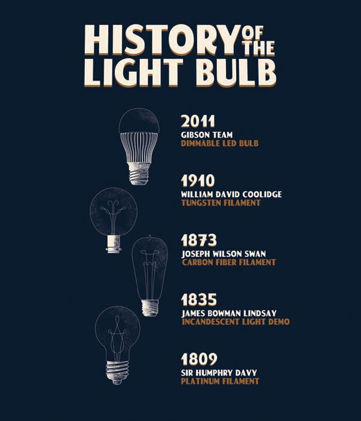

Gibson Tee Shirt Design
Below is a four-color tee shirt design for Cirrus Logic. The company wanted to celebrate their innovative and energy-saving product by creating an updated version of a World War II US government marketing poster.

Illustrator and Photoshop, 2011.